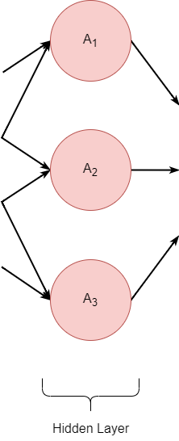
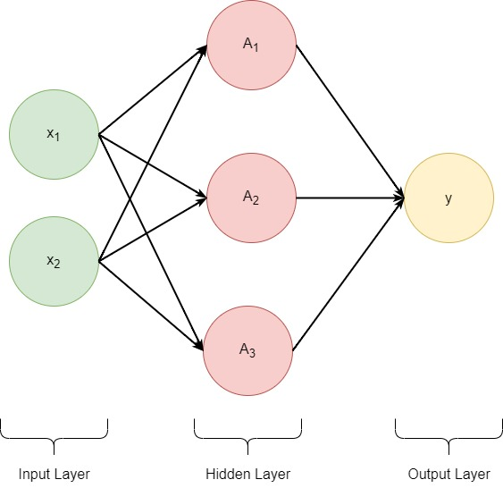

Understanding Neural Networks
Contents
Understanding Neural Networks#
Author: Dominick DeCanio
from IPython.display import Image, HTML
import pandas as pd
#path = "C:/Users/Dom/Desktop/edu/MSDS/fall_22/ds_6030/project"
Introduction#
Every day we interact with the world through our senses. When we wake up, we see the sunlight of the morning, we hear the birds chirping, and taste hot coffee. We rely on these sensory inputs to inform our decisionmaking, though this process is often taken for granted. When you get out of bed to put on a fresh cup of coffee, you might not realize that you have already made various decisions before you’ve started the coffee maker: retrieving coffee grounds from your cabinet requires you to decide which cabinet to open, opening your bedroom door requires you to acknowledge your doorknob’s location on your door, and getting out of bed requires that you look at the clock to convince yourself that you really have to wake up now.
Let’s work with a specific example: Consider this cat picture.

Source: https://commons.wikimedia.org/wiki/Category:Quality_images_of_cats#/media/File:Топа_8.jpg
{kind=link}
When you look at this picture of the cat, you can see that it is cute. Just as before, this is a decision we collectively arrive at after processing the stimulus of this image, a sensory input. To better understand our the subliminal decision-making processes that are required to come to such a conclusion, let us proceed through a set of questions to investigate how this decision was formed.
Why do you think this cat is cute?
The cat’s fur coloring is pretty
Why do you think the cat’s fur coloring is pretty?
The cat’s fur coloring is pretty because it has distinct colors of orange, white, and black.
Why do these features make the cat’s fur coloring pretty?
The distinct nature of the colors allows them to be more vibrant
Why does color vibrance make the cat’s fur coloring pretty?
Vibrant colors are pretty
Why are vibrant colors * pretty?
Vibrant colors are pretty
Notice that underlying our conclusion was a series of decisions and observations that were intertwinded to form a foundation for this conclusion. In this specific example, the root of the conclusion that the cat is cute is that vibrant colors are pretty, and therefor because the cat has vibrant colors in its fur, it is pretty too.
It is easy to image, however, that each of these questions has multiple answers. Infrequently do base conclusions on one component of an observation. Rather, our responses to stimuli tend to utilize multiple components of the stimulus in our decision.
Let’s proceed with the limitation that each question has 3 answers, and see what happens when we apply this assumption to the example above. Of course in reality such questions might have greater or less than 3 answers, and some answers might be the same.
Why do you think this cat is cute?
The cat’s fur coloring is pretty
The cat looks surprised
The cat’s nose is cute
Why do you think the cat’s fur coloring is pretty?
The cat’s fur coloring is pretty 1. The cat’s fur coloring is pretty because the colors are distinct 2. The cat’s fur colors form a cool pattern 3. The cat’s fur has multiple colors
The cat looks surprised
The cat’s nose is cute
Why do these features make the cat’s fur coloring pretty?
The cat’s fur coloring is pretty 1. The cat’s fur coloring is pretty because the colors are distinct 1. The colors are vibrant 2. The colors contrast well 3. Each color is rich 2. The cat’s fur colors form a cool pattern 3. The cat’s fur has multiple colors
The cat looks surprised
The cat’s nose is cute
This representation of the problem is getting a little hard to read - and there are many questions left unaswered because we have not answered all questions to the same depth. To understand the problem more concisely, we can rewrite these answers in tree diagram, with each box representing an answer and each line representing a question.
#<img src="images/cat_diagram_1.png" width=10000 height=1000 style="margin:auto"/>

We can see that our interpretation of the image relies on many small details of that image coming together to form an overall decision.
Note
We chose to ask 3 questions of every conclusion we came to when deciding that “this cat is cute”. This is an arbitrary choice, and thus we might ask an arbitrary number of questions of such a conclusion, resulting in an arbitrary number of variables.
Neural Network Motivation#
To create models that understand complex data such as images, we must mimic this structure of decomoposing the input into it’s components, and analyzing the interactions between these subparts before combining them to reach a conclusion. Generally, we might choose an arbitrary number of supporting variables to define any predictor variable in the feature space, dependent on the specific research question. Let’s introduce a simple example, which we will follow throughout our explanation of neural networks.
#<img src="" width=400 height=400 style="margin:auto"/>
Example
{kind=link}
A snack packet can contain two types of snack:
pretzel
cheeto
Each of these snacks are, in turn, composed of two ingredients:
wheat
corn
We might then express these relationships through the following variables and equations:
\(z\) = snack packets
\(y\): snacks
\(y_{1}\) = pretzel
\(y_{2}\) = cheetos
\(x\): ingredients
\(x_{1,1}\) = wheat
\(x_{1,2}\) = salt
\(x_{2,1}\) = corn
\(x_{2,2}\) = cheese
\( z = y_{1} + y_{2} \)
\( y_{1} = x_{1,1} + x_{1,2} \)
\( y_{2} = x_{2,1} + x_{2,2} \)
{kind=link}
You might then think to yourself:
Why don’t we simply use another modeling framework such as ordinary least squares (OLS)?
An artificial neural network (ANN) is a model which mimics the human brain on some level in order to process a complex input. The similarities between brain models and ANNs diverged soon after ANNs were created, and the architectures of modern ANNs do not resemble contemporary understanding of the brain. As these networks developed, and the differences between biological and artificial neural networks became well established, the convention of specifying the network as “artificial” became less necessary. Now, an artificial neural networks is known as simply a neural network (NN) and will be referred to as such throughout this article.
There are many good resourses that describe neural network architectures, and the applications thereof. Because neural networks are difficult to interpret, many resources do not cover neural network interpretation, which would admittedly be of limitted use to most readers. This article will develop an understanding of neural networks that:
provides intuition of neural network architecture
informs the reader of pitfalls of neural network interpretation
is rooted in the underlying mathematics of these networks
The intended audience of this article is a graduate student, advanced undergraduate student or independent learner who has some familiarity with linear algebra, statistics, and neural network architecture but lacks an intuitive understanding of these networks.
Neural Network Design#
The following diagram shows a single layer neural network (a neural network with only one hidden layer) that has two inputs and one output.
If you have worked with neural networks before, you have almost certainly seen a diagram like this used to explain what is going on underneath the hood. The aim of the following sections is to systematically break down this diagram using examples and interpretations to form an intuitive understanding of what these bubbles represent.
Motivation#
We have established that in order to model a complex decision process such as image recognition it is essential to decompose the problem into sub-problems to find suitable answers and compose a solution.
In your usage of statistics thus far you have learned about a variety of methods through which you can model results, such as ordinary least squares. Why can’t we simply use ordinary least squares, with the variables equal to each of the “sub-problems” (characteristics) we investigate?
Let’s continue with this premise and understand the results through an example.
Ordinary Least Squares (OLS) equation:
\( y = \beta_{0} + \beta_{1}x + \epsilon \)
Remember that in an OLS equation, each predictor variable (x) has an estimated coefficient that can be interpretted using the units of the predictor variable and target variable (y) to interpret the impact of that input on the prediction of the target variable. We will use this property of OLS to connect the interpretation of variable importance to usage of OLS to analyse decomposed predictors, which will illustrate the necessity of neural network architectures for the analysis of nested predictors.
Let’s return to the cat example. Recall the tree diagram of our “predictor variables” that led us to the conclusion that “This cat is cute”:

We will use this diagram to inform our OLS regression model which will predict a cat’s “cuteness score” based on various predictor variables. Below is a section of the diagram which is completed and will serve as the basis for our example.

In order to understand this image classification without diving into the root of convolutional neural networks (CNN’s) and the intricacies of CNN network design in order to explain how features are derived from the picture in the first place, we will instead understand this image as if the image has an associated “score” for each variable we identify. This will simplify our problem immensely by removing the necessity to derive these variable “scores”, and lends itself to the OLS interpretation we are looking for.
For the diagram above, we interpret the boxes to represent random variables. Forming a linear equation using the highest two layers of the tree diagram, we generate the following equation:
Cuteness Score = Fur Color Score + Surprised Expression Score
| Variable | Data Type | Description |
|---|---|---|
| Cuteness Score | float between 0 and 1 | The value 1 represents the "cutest" a cat could possibly be, and the value 0 represents the "least cute" a cat could possibly be. |
| Surprised Expression Score | float between 0 and 1 | The value 1 represents the "most surprised" a cat could possibly look, and the value 0 represents the "least surprised" a cat could possibly look. |
| Fur Color Score | float between 0 and 1 | The value 1 represents the "best fur color" a cat could possibly have, and the value 0 represents the "worst fur color" a cat could possibly have. |
The variables above may be thought of as aggregate scores combining physical measurements and human psychology. For example: the size of the cat’s eyes might be measured by the computer through understanding the eye as some eliptical shape, and it’s “wide-ness” might be the difference between the surface area formed by this eplipse and the surface area created by a circle of the same diameter. This, in turn, impacts some computation which weights the various components of
# maybe do some paper planning so i'm not stumbling over myself in the writing!
# NEED FEEDBACK ON THE DIAGRAMS! DO I NEED TO REDRAW THEM ALL????
# How do I utilize the sources?
# - cannot directly quote, so how do I represent that I have sourced/verified principles with a textbook?
Cat Example using OLS:
\( y \) = “cuteness” rating
\( \beta_{0} \) = estimated cuteness
\( \beta_{1} \) = est
Or, More generally:
\( a = a_{1} + a_{2} + a_{3} \)
\( b = b_{1} + b_{2} + b_{3} \)
\( y_{a} = \beta_{a0} + \beta_{a1}a_{1} + \beta_{a2}a_{2} + \beta_{a3}a_{3} \)
\( y_{b} = \beta_{b0} + \beta_{b1}b_{1} + \beta_{b2}b_{2} + \beta_{b3}b_{3} \)
\( z = \beta_{y0} + \beta_{ya}y_{a} + \beta_{yb}y_{b} \)
\( z = \beta_{y0} + \beta_{ya}(\beta_{a0} + \beta_{a1}a_{1} + \beta_{a2}a_{2} + \beta_{a3}a_{3}) + \beta_{yb}(\beta_{b0} + \beta_{b1}b_{1} + \beta_{b2}b_{2} + \beta_{b3}b_{3}) \)
We can see that this can be rewritten:
\( z = \beta_{y0} + \beta_{a0} + \beta_{b0} + \beta_{ya}a(\beta_{a1} + \beta_{a2} + \beta_{a3}) + \beta_{yb}b(\beta_{b1} + \beta_{b2} + \beta_{b3}) \)
We can rename:
\( \beta_{a} = \beta_{a1} + \beta_{a2} + \beta_{a3} \)
\( \beta_{b} = \beta_{b1} + \beta_{b2} + \beta_{b3} \)
\( \beta_{0} = \beta_{y0} + \beta_{a0} + \beta_{b0} \)
\( z = \beta_{0} + \beta_{a}a + \beta_{b}b\)